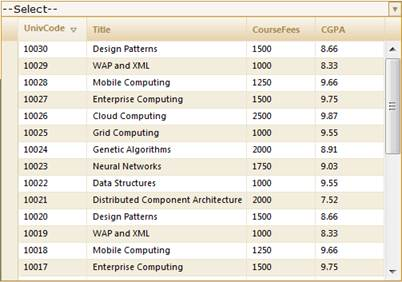

To sort in server mode using Builder:
Create a model in the application (Refer to Getting Started>Adding a Model to the Application).
In the view, create the MultiColumnDropDown control and configure its properties.
|
View [ASPX]
<%=Html.Syncfusion().MultiColumnDropDown<Student>("MultiColumnDropDown") .Datasource((IEnumerable) ViewData["data"]) .DisplayExpression(new int[] {2, 3, 5}) .Width(500) .Text("--Select--") %>
|
|
View [cshtml]
@(new HtmlString(Html.Syncfusion().MultiColumnDropDown<Student>("MultiColumnDropDown") .Datasource((IEnumerable) ViewData["data"]) .DisplayExpression(new int[] {2, 3, 5}) .Width(500) .Text("--Select--").ToString()))
|
Enable/disable the sorting feature using the AllowSorting() method.
|
View
<%=Html.Syncfusion().MultiColumnDropDown<Student>("MultiColumnDropDown") .Datasource((IEnumerable) ViewData["data"]) .DisplayExpression(new int[] {2, 3, 5}) .Width(500) .AllowSorting(true) .Text("--Select--") %>
|
|
View [cshtml]
@(new HtmlString(Html.Syncfusion().MultiColumnDropDown<Student>("MultiColumnDropDown") .Datasource((IEnumerable) ViewData["data"]) .DisplayExpression(new int[] {2, 3, 5}) .Width(500) .AllowSorting(true) .Text("--Select--").ToString()))
|
Set its data source and render the view.
|
Controller
/// <summary> /// Used for rendering the MultiColumnDropDown initially. /// </summary> /// <returns>View page; it displays the MultiColumnDropDown.</returns> public ActionResult Index() {
var Data = new StudentDataContext().AutoFormatStudent.Take(200); ViewData["data"] = Data; return View(Data); } |
In order to work with sorting actions, create a Post method for Index actions and bind the data source to MultiColumnDropDown as shown in the following code.
|
Controller
[AcceptVerbs(HttpVerbs.Post)] public ActionResult Index (PagingParams args) { IEnumerable data =new StudentDataContext().AutoFormatStudent.Take(20); return data.GridActions<Student>(); } |
Run the application. The MultiColumnDropDown will appear as shown in the following screenshot.

Figure 320: Sorting Enabled MultiColumnDropDown Control

Figure 321: “UnivCode” Column Sorted in Descending Order